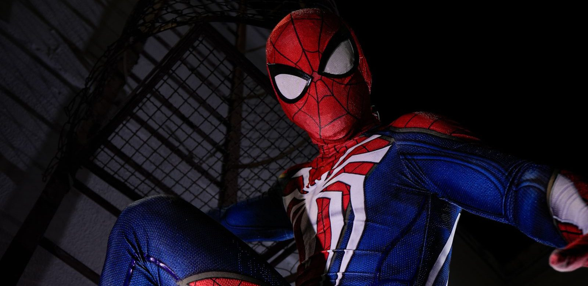

Web shooters en Spider-Man handschoenen: vijf keuzes vergeleken
Thwip! Wie webben wil schieten net als Spider-Man, kiest tussen een handschoen met een schieter erop en een blaster die je in je hand houdt. Wij vergeleken vijf keuzes per leeftijd, en leggen uit hoe je ermee speelt.

In het kort
Het korte antwoord: voor een kind van vier tot zes jaar is de Spidey Web Launcher van Hasbro de beste web shooter, en voor een schoolkind de Nerf Web Strike Blaster uit de film Spider-Man: Brand New Day. Een kind dat liever de schurk is, krijgt de Venom-blaster, twee kinderen samen kunnen met de dubbele handschoenset uit de voeten, en wie alleen een paar Spider-Man handschoenen bij het pak zoekt, vindt die ook hieronder. De prijs van elke keuze staat live in de tabel en in elk blok, want die verandert.
Waar het verschil in zit
Handschoen of blaster. Een handschoen-shooter trek je aan, en je schiet vanaf de bovenkant van je hand, net als Spider-Man. Dat is voor kleine kinderen het makkelijkst, omdat ze niets hoeven vast te houden. Een blaster houd je vast aan een handvat, je laadt hem door met een hendel en drukt op een knop. Dat schiet verder en is leuker voor schoolkinderen, maar het voelt minder als een echte web shooter.
Wat eruit komt. Bijna alles schiet zachte pijltjes of Nerf-darts met een schuimpunt. Er bestaan ook blasters die een sliert webvloeistof spuiten; die zijn het spectaculairst, maar je moet ze steeds navullen. Een verkleedhandschoen schiet helemaal niets: die hoort bij het pak.
De leeftijd op de doos. Hasbro maakt de Spidey Web Launcher speciaal voor kleine handjes, vanaf vier jaar. Bij de Nerf-blasters raadt Hasbro aan een bril te dragen, en die zit er niet bij. De goedkope merkloze shooters noemen vaak zeven jaar, omdat ze harder schieten.
Alleen of samen. Met één shooter schiet je op een doel. Met twee kun je tegen elkaar spelen, en dat is waar kinderen het langst mee bezig zijn. Daarom staat er een set van twee tussen.
Onze keuzes
Spidey Web Launcher van Hasbro
Dit is de web shooter die het dichtst bij Spider-Man komt voor een kleuter. Het is een handschoen die je zelf aan- en uittrekt, en het laden en afvuren van de zachte pijltjes gaat met één beweging. Hij hoort bij de tekenfilmserie Spidey and his Amazing Friends op Disney Jr., die kleuters echt kijken, en hij komt van de makers van Nerf.
- Volgens Hasbro vanaf vier jaar
- Handschoen: niets vast te houden of te richten
- Zachte schuimpijltjes, ook binnen te gebruiken
- Nog geen beoordelingen bij bol
- Schiet niet ver; voor oudere kinderen te braaf
Nerf Web Strike Blaster
De blaster uit de nieuwe film, Spider-Man: Brand New Day. Hij heeft een dubbele loop: je laadt twee darts, trekt de hendel naar achteren en schiet ze één voor één af. Hij licht op in het donker, en er zitten drie Nerf-darts bij. Voor een kind dat al Nerf speelt is dit de beste Spider-Man-keuze.
- Van Hasbro, de maker van Nerf
- Dubbele loop, dus twee schoten achter elkaar
- Glow-in-the-dark: ook leuk als het donker is
- Een blaster, geen handschoen: voelt minder als Spider-Man
- Hasbro raadt een bril aan, die zit er niet bij
- Nog geen beoordelingen bij bol
Venom Strike Blaster
Bij elk Spider-Man-spel wil er één de schurk zijn, en dan is dit de blaster. De dart gaat in de mond van Venom, je drukt zijn kop dicht, trekt aan het handvat en schiet. Met een broer of vriendje met de Spider-Man-blaster heb je meteen een heel spel.
- Van Hasbro, schiet Nerf-darts
- Grappig ontwerp: de mond gaat open en dicht
- Goede tegenhanger van de Spider-Man-blaster
- Eén dart per keer
- Nog geen beoordelingen bij bol
Twee web shooters in één doos
Een set van twee handschoen-shooters, voor twee kinderen die tegen elkaar willen spelen. Het is geen Marvel-product maar een merkloze shooter, en de verkoper noemt zeven jaar en ouder omdat de pijltjes ver gaan. We kiezen hem omdat er bij bol geen officiële set van twee is.
- Twee shooters, dus meteen samen spelen
- Handschoen, net als Spider-Man
- Voor buiten: schiet volgens de verkoper ver
- Geen officieel Spider-Man-product
- Twee beoordelingen bij bol, en die zijn gemengd
Spider-Man handschoenen van Rubie's
Zoek je alleen Spider-Man handschoenen bij een verkleedpak, dan zijn dit de goedkoopste uit deze gids. Rood met het zwarte webpatroon, van Rubie's, de maker van veel verkleedpakken. Ze schieten niets: wie wil schieten, neemt een van de keuzes hierboven.
- Maakt een Spider-Man-pak af
- Klein cadeau, ook voor in de schoen
- Geen pijltjes om kwijt te raken
- Schiet niets
- Eén maat, voor grote kinderhanden te krap
- Drie beoordelingen bij bol
Welke past bij welk kind
Vier tot zes jaar. Neem de Spidey Web Launcher. Een handschoen is voor deze leeftijd veel makkelijker dan een blaster, en de pijltjes zijn zacht genoeg voor binnen.
Zes tot negen jaar. Neem de Nerf Web Strike Blaster, en als er een broer of zus is de Venom-blaster erbij. Dan heb je held en schurk, en dat is precies hoe kinderen Spider-Man spelen.
Twee kinderen met een klein budget. De dubbele handschoenset is de goedkoopste manier om met z'n tweeën te spelen. Verwacht geen Marvel-kwaliteit.
Bij een verkleedpartij. De handschoenen van Rubie's maken het pak af. Wil je ook een masker en een pak, kijk dan bij zo word je zelf een echte superheld.
Zo schiet je een web
- Doe de handschoen aan, of pak de blaster vast aan het handvat.
- Laad een pijltje of dart en kies een doel: een blik, een kussen of een zelfgemaakt schietbord.
- Strek je arm, maak de bekende Spider-Man-beweging met je vingers en roep "Thwip!"
- Raak je vaker mis dan raak? Ga een stap dichterbij staan en oefen eerst op een groot doel.
De belangrijkste regel: nooit op ogen of gezicht richten, ook niet met zachte pijltjes.
💡 Wist je dat?
In de strips maakt Peter Parker zijn webvloeistof helemaal zelf. Hij is dus niet alleen sterk, maar ook heel slim. Lees meer over de krachten van Spider-Man.
Wat wij niet zouden kopen
Een losse navulling webvloeistof. Bij bol staat navulling voor een Spider-Man-blaster die echte webslierten spuit, maar de blaster zelf vonden wij er op 13 oktober 2026 niet. Zonder de blaster doe je niets met de navulling; kijk dus eerst of je hem al hebt.
Een webwerper voor cosplay. Bij bol staan webwerpers die een touw afschieten en automatisch terughalen, voor een veelvoud van de prijs van alles in deze gids. Die zijn gemaakt voor volwassenen met een kostuum, niet voor kinderen.
Een merkloze shooter met één slechte beoordeling. Hier stond eerder een merkloze web shooter als onze tip. Die heeft bij bol nu één beoordeling, met één ster, en is daarom uit deze gids gegaan. Bij merkloze shooters is het aantal beoordelingen het enige wat je over de kwaliteit weet.
Veelgestelde vragen
Wat is een Spider-Man handschoen?
Er zijn twee soorten. Een handschoen met een schieter erop, zoals de Spidey Web Launcher, schiet zachte pijltjes af. Een verkleedhandschoen met het webpatroon hoort bij een Spider-Man-pak en schiet niets.
Wat is het verschil tussen een handschoen en een web shooter?
Een handschoen trek je aan en schiet vanaf je hand; dat is voor jonge kinderen het makkelijkst. De Nerf-blasters van Spider-Man en Venom houd je vast aan een handvat, laad je met darts en schieten verder. Die passen beter bij schoolkinderen.
Vanaf welke leeftijd is een web shooter geschikt?
Hasbro maakt de Spidey Web Launcher voor kinderen vanaf vier jaar. De verkoper van de dubbele handschoenset noemt zeven jaar en ouder. Kijk bij elk model naar de leeftijd op de doos, en leer kinderen nooit op ogen of gezicht te richten.
Kun je met speelgoed echt webben schieten?
Bijna alle web shooters schieten zachte pijltjes of Nerf-darts, geen web. Er bestaan blasters die een sliert webvloeistof spuiten, maar die vonden wij op 13 oktober 2026 niet bij bol; alleen de losse navulling stond er.
Hoe wij deze vijf gekozen hebben
We hebben gezocht naar web shooters, Spider-Man-blasters en handschoenen die over leeftijd, soort en budget gespreid zijn: van een handschoen voor een kleuter tot een Nerf-blaster voor een schoolkind, en van een klein cadeautje tot het grotere pakje. Elk product is op 13 oktober 2026 bij bol nagekeken op prijs en levertijd. Wat de producten doen en voor welke leeftijd ze zijn, komt uit de productbeschrijving van de fabrikant of de verkoper. Een web shooter zonder prijs of levertijd hebben we laten liggen.
Over sterren: bij dit speelgoed zijn de aantallen beoordelingen klein, en de officiële blasters van Hasbro hebben er nog geen. Het aantal staat in elk blok, zodat je zelf kunt zien hoeveel een score zegt.
Via de knoppen naar bol verdienen wij een kleine commissie. Dat verandert niets aan wat hier staat: valt een product bij bol weg, dan verdwijnt het blok inclusief onze tekst, en de prijs die je ziet is altijd de actuele van bol.
Zoek je meer Spider-Man-cadeaus? Kijk dan bij Spider-Man cadeau per leeftijd, de beste Spider-Man actiefiguren of superhelden cadeaus voor Sinterklaas, of lees alles over Spider-Man.